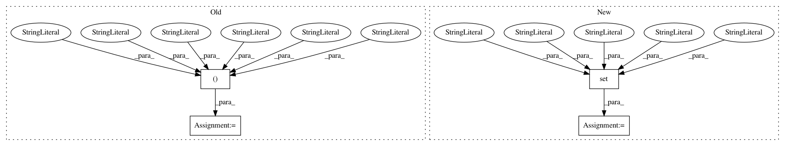

d6b1ade52fe313bd853667ea365c110ed06fc74a,src/python/pants/option/parser.py,Parser,Parser_2,#,273
Before Change
hint = deprecated_hint or ""
return "{}. {}".format(message, hint)
_custom_kwargs = ("advanced", "recursive", "recursive_root", "registering_class",
"fingerprint", "deprecated_version", "deprecated_hint", "fromfile")
def _clean_argparse_kwargs(self, kwargs):
deprecated_version = kwargs.get("deprecated_version", None)
deprecated_hint = kwargs.get("deprecated_hint", "")
After Change
warnings.warn("*** {}".format(msg), DeprecationWarning,
stacklevel=9999) // Out of range stacklevel to suppress printing src line.
_allowed_registration_kwargs = {
"type", "action", "choices", "dest", "default", "implicit_value", "metavar",
"help", "advanced", "recursive", "recursive_root", "registering_class",
"fingerprint", "deprecated_version", "deprecated_hint", "fromfile"
}
_allowed_actions = {
"store", "store_true", "store_false", "append"
}
In pattern: SUPERPATTERN
Frequency: 3
Non-data size: 4
Instances
Project Name: pantsbuild/pants
Commit Name: d6b1ade52fe313bd853667ea365c110ed06fc74a
Time: 2015-11-05
Author: benjyw@gmail.com
File Name: src/python/pants/option/parser.py
Class Name: Parser
Method Name: Parser_2
Project Name: andresriancho/w3af
Commit Name: de2467b2da75b4f90125f803f3ea198e6c16d763
Time: 2019-01-11
Author: andres.riancho@gmail.com
File Name: w3af/core/controllers/output_manager/log_sink.py
Class Name: LogSink
Method Name: LogSink_1
Project Name: CyberReboot/NetworkML
Commit Name: 5836891ac3e6bfb68dbe45589ac87e5ac02a2cfa
Time: 2020-03-28
Author: josh@vandervecken.com
File Name: networkml/featurizers/funcs/host.py
Class Name: HostBase
Method Name: HostBase_1